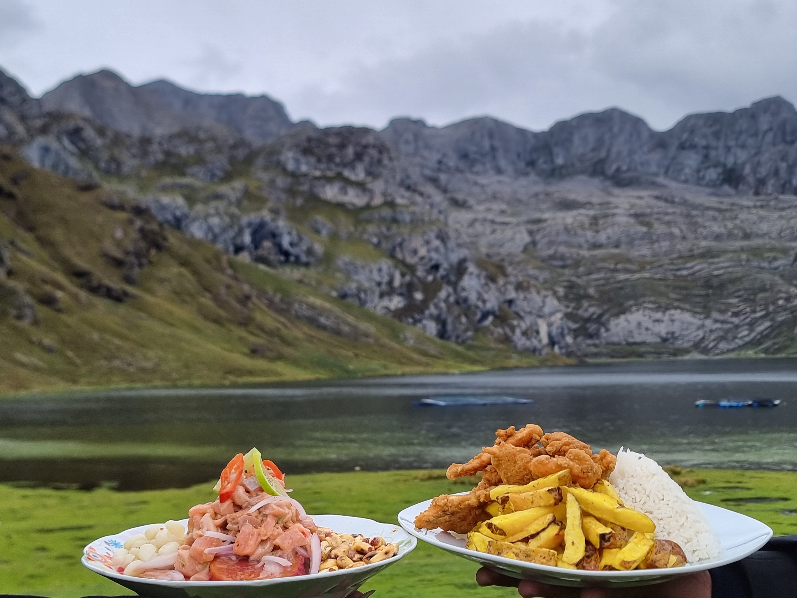
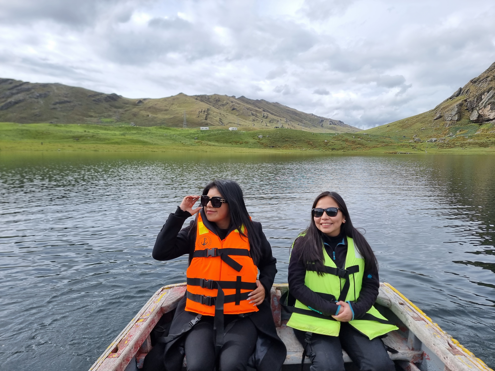
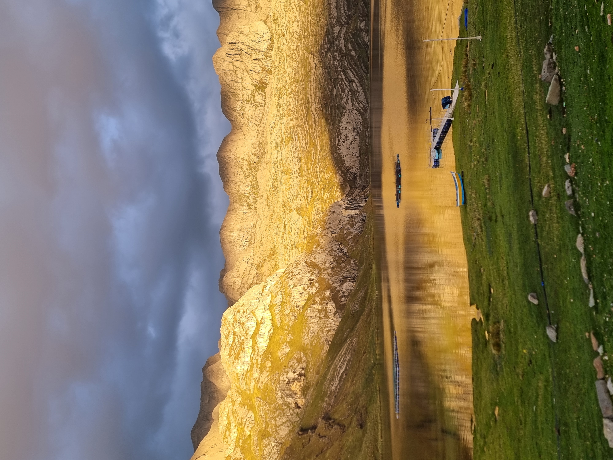

100%
Aguas de laguna de altura
Agua pura andina · Producción responsable
Laguna Canrash integra acuicultura de alta calidad y experiencias inmersivas en la laguna, a 3 horas de Huaraz.

100%
Aguas de laguna de altura
+3h
Desde Huaraz
Dual
Modelo acuícola + turismo
Premium
Textura firme y sabor limpio
Storytelling
El origen de Laguna Canrash está en la pureza de sus aguas. El entorno andino, la altitud y el manejo técnico permiten una trucha de perfil premium: limpia, consistente y trazable.
Producción en ecosistema de altura con control de calidad en cada fase.
Agua fría y oxigenada que favorece textura firme y sabor equilibrado.

Bento Services



Acuicultura
Oferta para restaurantes, distribuidores y consumo directo. Producción orientada a consistencia, rendimiento y frescura.
Ver criaderoBooking
Catálogo comercial
Restaurantes
Formato fresco con soporte de abastecimiento continuo.
Mayoristas
Volúmenes programados para cadena de distribución.
Turista y consumidor final
Compra directa en destino y degustación inmediata.
Ubicación
Llegar a Canrash es parte de la experiencia: ruta panorámica andina y conexión directa con la naturaleza.
Ver mapa y rutasFAQ
En el distrito de San Marcos, provincia de Huari, región Áncash (Perú).
Puedes reservar por WhatsApp y coordinar experiencia, mesa y hospedaje en un solo flujo.
Sí. Atendemos requerimientos comerciales para restaurantes, hoteles y distribuidores.